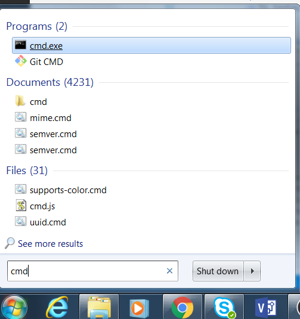

Setup 1: Installing Node JS
Javascript and NodeJS
These turtorial use the langauge Javascript;specifically ECMA Script 2016.
Javascript is used in Web Browsers, but using a tool called NodeJS. You can write Javscript programs that run on your computer outside of the browser.
The tutorial use NodeJS and you will need NodeJS installed on your computer.
To install NodeJS go to https://nodejs.org
Download the software and run the installer.
Testing the Install
Once installed, run the command prompt. On windows the is the program CMD. On OSX and Linux this is the terminal.

From the command line type: node --version
C:\> node --version
This should run nodeJS and output the version of the software.
Video: Installing node JS
This following video does the steps described in this lesson.